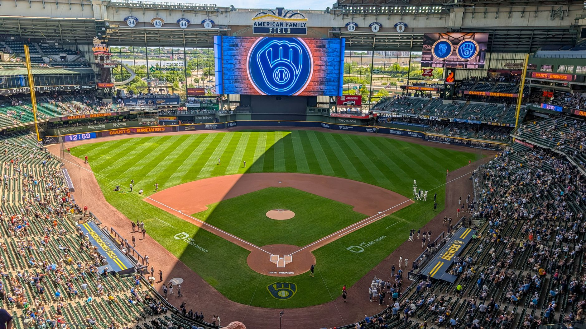

Misiorowski's remarkable streak finally ends
For 25 consecutive starts, Jacob Misiorowski had been the model of consistency for the Milwaukee Brewers. Every time he took the mound, the rookie right-hander gave his team a chance to win by holding opponents to three earned runs or fewer. That streak, one of the longest of its kind in recent memory, finally came to an end against the division-rival Cubs.
Misiorowski surrendered five earned runs in this outing, marking the first time since early in the season that he crossed that three-run threshold. The Cubs lineup, known for its patience and ability to grind out long at-bats, finally got to him by working counts and capitalizing on a few mistakes over the heart of the plate.
Streaks like that don't happen by accident, and they don't end by accident either. The Cubs earned every run they scored tonight.
The Brewers offense picks up its starter
The story of the night was not just about the streak ending, but about how the Brewers responded. Milwaukee's lineup, which has quietly been one of the more productive units in the National League, went to work immediately after Misiorowski ran into trouble. The offense put together a series of disciplined at-bats, working walks, moving runners, and delivering timely hits with runners in scoring position.
What stood out most was the team-wide approach. There was no panic in the dugout when the streak ended. Instead, the Brewers leaned on the same formula that has carried them through the season: solid starting pitching, a reliable relief corps, and an offense that refuses to go quietly.
What the end of the streak really means
It would be easy to frame the end of this streak as a negative, but the reality is far more encouraging for Brewers fans. Misiorowski did not get shelled. He was not rattled. He simply had a night where a strong opponent made him pay for a handful of mistakes, and he still gave his team enough to compete. That is the hallmark of a pitcher who belongs in a major league rotation.
The 25-game streak itself is worth putting into context. To allow three earned runs or fewer in that many consecutive starts requires not just talent but durability, focus, and the ability to adjust on the fly. Misiorowski showed all of those traits throughout the run, mixing his fastball with a sharp breaking ball and showing a willingness to attack the strike zone even when behind in counts.
Brewers keep rolling as the race tightens
The win over the Cubs mattered beyond just salvaging Misiorowski's night. Division games in the second half of the season carry extra weight, and the Brewers know that every series against a division rival can swing the standings. By picking up their starter and finding a way to win, the Brewers sent a message that they are not dependent on any single player to carry them.
The team has also had to deal with other challenges this season, including a scary moment in the outfield that could have derailed their momentum. For more on how the Brewers handled that situation and kept their roster intact, check out our coverage of the Brewers Outfield Collision: Pratt, Chourio, and Ortiz Safe at https://dhyey.bond/blog/brewers-outfield-collision-pratt-chourio-and-ortiz-safe/
As the season rolls on, Misiorowski will get the ball again, and the streak counter will reset. If history is any guide, he will be right back to doing what he does best: giving the Brewers a chance to win every fifth day. And if the offense keeps responding the way it did against the Cubs, Milwaukee is going to be a tough team to beat down the stretch.
See Also
If you enjoyed this Baseball News article, check out Brewers Outfield Collision: Pratt, Chourio, and Ortiz Safe for more useful reading.